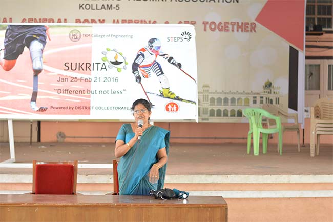

Gallery


Sukrita ’16 is a mega event aimed at the empowerment of differently abled people, organized by STEPS TKMCE, over a period of one month.
Sukrita aims to empower and motivate the differently abled in the society by providing them a unique opportunity to get nearer to the brilliant technical minds which can offer them with innovative solutions for their needs, Lok Adalat, where they could put forward their problems to the concerned authority and a job fair to make them self- supportive.
By organizing Sukrita’16 we aim to:
Recognize and honor differently abled members of our society and provide them with all the support and help they need.
Create a venue where ideas are exchanged, services provided, mindsets reformed and words put to action.
Initiate a chain of events that would later on garner greater support and empowerment of incapacitated individuals.
The list of events for SUKRITA’16 are given below:
turned_in_notAn advantageous, workshop for the betterment of patients suffering from paraplegia, an impairment in motor or sensory function of the lower extremities caused by spinal cord injury or a congenital condition such as spina bifida that affects the neural elements of the spinal canal thus causing loss of body organ functions leading to disabilities. Main aim of this program is to train the patients so as to make them perform their daily routine on their own. In addition, a vocational job training is also scheduled for them as well as their care takers during these days.
turned_in_notAs a public initiative of SUKRITA’16, an organ donation awareness campaign is organized to make people realise the importance of organ donation especially eye donation, and handover the organ donation declaration form of TKMCE students and staffs to “MRITHASANJEEVANI”, a government of Kerala initiative.
turned_in_notThe Medical Camp will comprise of an expert panel of Physiatrists/Orthopaedician Specialized in the field of Paediatric Rehabilitation/Orthopaedics for 27 selected children of DEIC attatched to Govt. Victoria Hospital, Kollam.
turned_in_notState and national government has introduced few policies aiming the empowerment of various group of differently abled people. We aim to orient the public regarding the different welfare schemes aimed at these people and make them able to get benefitted out of these policies. The influence of social media is directed in achieving these objectives.
turned_in_notAim to make a difference in their day - a day with colours, music, and much more…Even though there are some difficulties, the students are ready to accept those challenges. Transportation needs special attention. Few ambulance services are required.
turned_in_notPersons with disabilities do have outstanding abilities. The abilities of these people should be recognized and encouraged so as to bring them to the main stream of the Society. For this, we provide an opportunity to showcase their skills.
turned_in_notDeserving people are found out after conducting a survey in and around Kollam area, and they are Invited to Sukrita’16, where they will get chance to raise their demands and voice their concerns to a panel under the honourable District Collector.
turned_in_notBy incorporating ideas form different branches of engineering, students were able to come up with ideas of various assistive equipment. This will not only help us improve our technical skills, but also enable us to be resourceful to the needy.Innovation to already existing equipment design will also be implemented. By making slight modifications to the products available at the market we are able to customize it to suit the need of individuals.The prospects of Bionic prosthetics is also being explored, where 3D printing technology is effectively used for creating artificial prosthetic parts at minimal cost. TKMCE aims to be the hub for bionic prosthetics by manufacturing custom prosthetics for the physically challenged and through continued R&D activities.
turned_in_notAs part of Sukrita'16, STEPS TKMCE has come up with a platform for the technical minds to showcase their innovative ideas in the field of assistive devices. The interested participants are initially required to send an abstract of their ideas. The abstracts received will be analyzed by the expert team., after which the participants will be given the opportunity to demonstrate their project before a panel. The most technically innovative and socially relevant project will be awarded. . The winning participants will be given the oppertunity to market their product and become established entrepreneurs.
turned_in_notPeople with physical disabilities that affect movement can use mobility aids, such as wheelchairs, scooters, walkers, canes, crutches, prosthetic devices, and orthotic devices, to enhance their mobility. Hearing aids can improve hearing ability in persons with hearing problems. Cognitive assistance, including computer or electrical assistive devices, can help people function following brain injury. Computer software and hardware, such as voice recognition programs, screen readers, and screen enlargement applications, help people with mobility and sensory impairments to use computer technology.